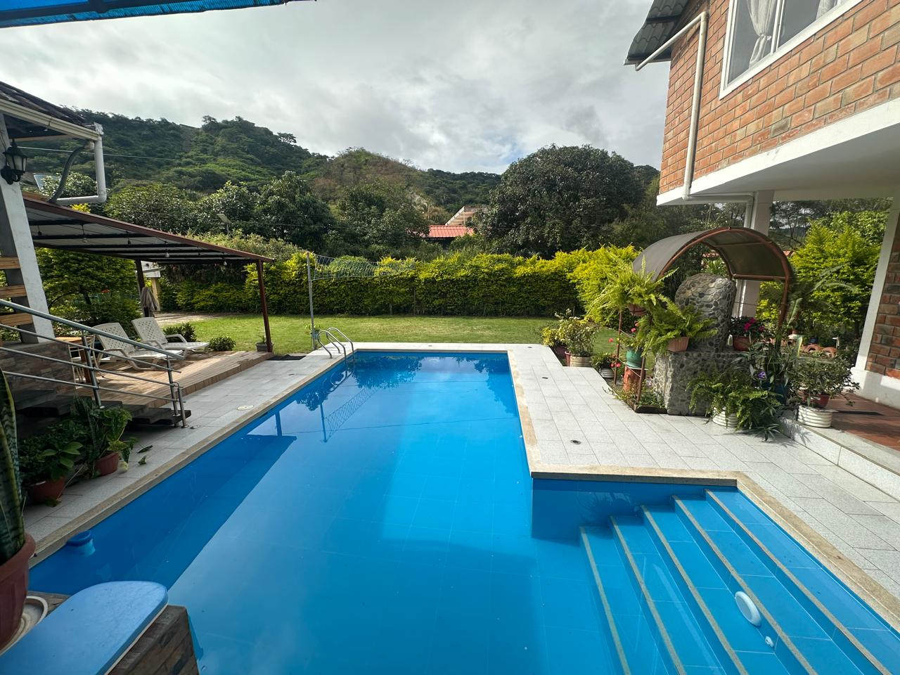
Piscina
Un espacio de recreación para disfrutar durante tu estancia en Malacatos.
Finca Agroturística La Trinidad ofrece hospedaje rural en Malacatos, Loja, en un ambiente familiar con piscina, jacuzzi, baño turco, ping-pong, billar, cancha de vóley, minicancha de básquet y juegos infantiles. Estamos en el barrio La Trinidad, a unos cinco minutos del centro de Malacatos.
Si buscas dónde hospedarte en Malacatos para disfrutar de un entorno rural tranquilo, conoce Finca Agroturística La Trinidad. Sus instalaciones ofrecen ambientes para el descanso, la convivencia familiar y la recreación.
La finca reúne piscina, jacuzzi, baño turco, ping-pong, mesa de billar, cancha de vóley, minicancha de básquet, juegos infantiles, comedor, terraza y zona de parrilla. Es una alternativa para quienes desean conocer Malacatos y disfrutar de una estancia rodeada de naturaleza.
Puedes consultar por habitaciones o por el alquiler de la casa completa. La disponibilidad, condiciones y tarifas se confirman directamente, según la fecha y el número de visitantes.
Conoce las instalaciones acuáticas, deportivas y recreativas de la finca antes de planificar tu visita.

Un espacio de recreación para disfrutar durante tu estancia en Malacatos.
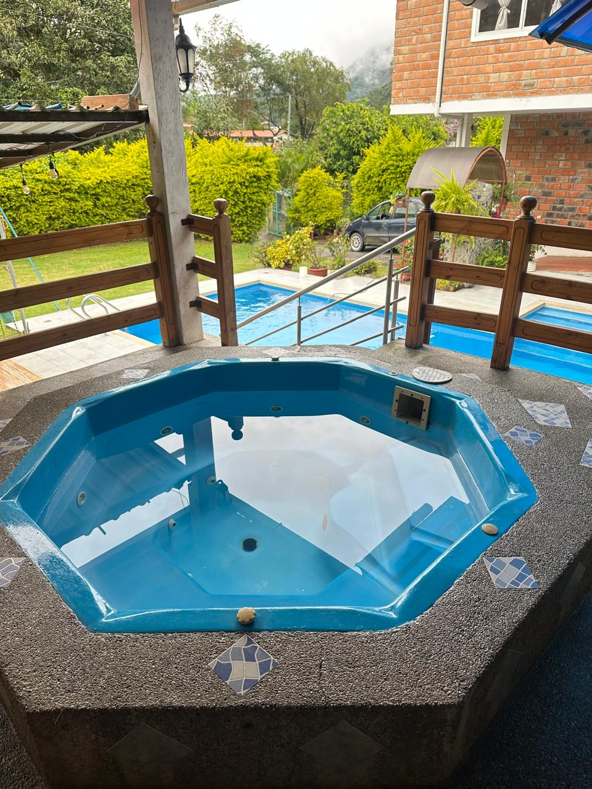
Zona de relajación junto a la piscina y las instalaciones de la finca.
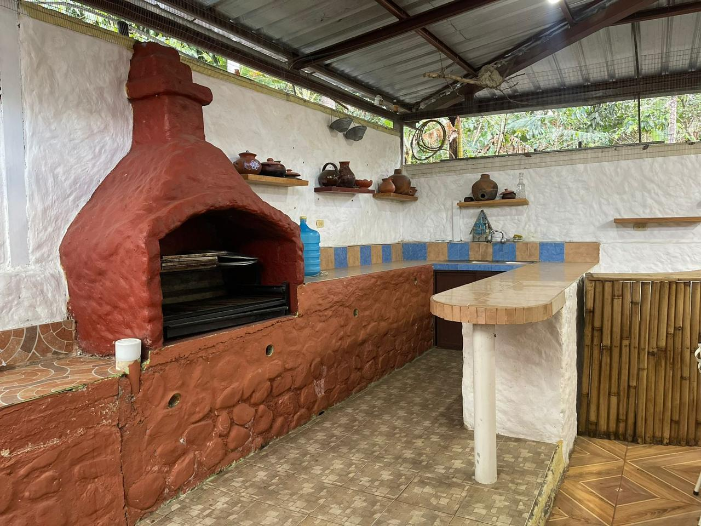
Espacios para compartir comidas y reuniones en un ambiente familiar.
Además de la piscina y el jacuzzi, disfruta de actividades recreativas para diferentes edades.
Un espacio adicional para relajarte durante tu visita a Malacatos.
Mesas para compartir partidas y momentos recreativos con familiares y amigos.
Cancha de vóley y minicancha de básquet para disfrutar de actividades deportivas.
Área de juegos para los visitantes más pequeños, bajo supervisión de sus acompañantes.
Consulta las opciones de hospedaje en habitaciones o el alquiler de la casa completa. No publicamos precios fijos: te informamos las tarifas y la disponibilidad al conocer las fechas y el número de personas.
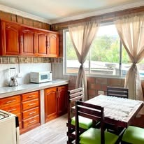
La finca cuenta con ambientes interiores y exteriores para complementar el descanso y compartir con familia o amigos.
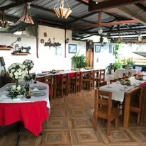
Indica la fecha de entrada, la fecha de salida, el número de personas y si buscas habitaciones o la casa completa.
Recorre visualmente la piscina, jacuzzi, terrazas, comedor y espacios sociales. La finca también dispone de turco, ping-pong, billar, vóley, minibásquet y juegos infantiles.
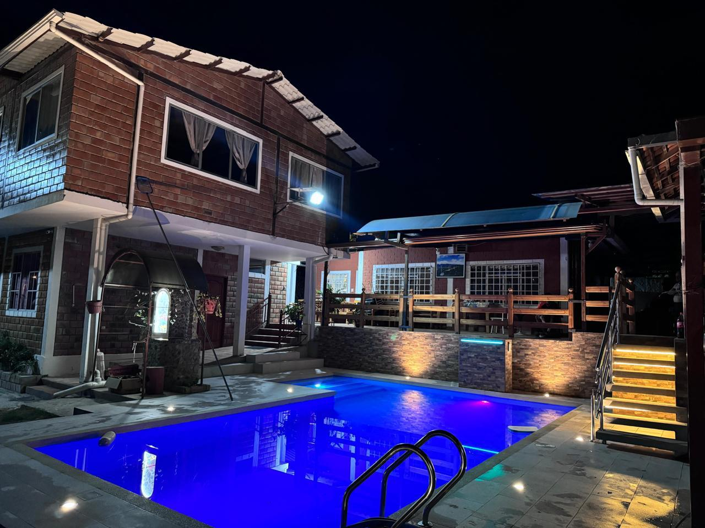
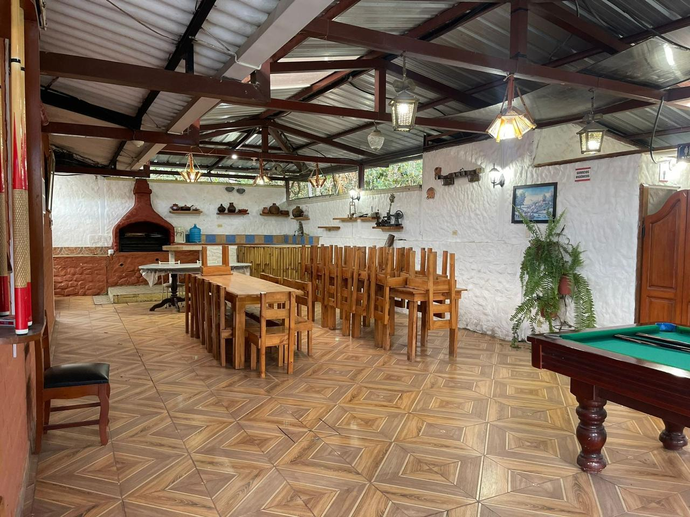
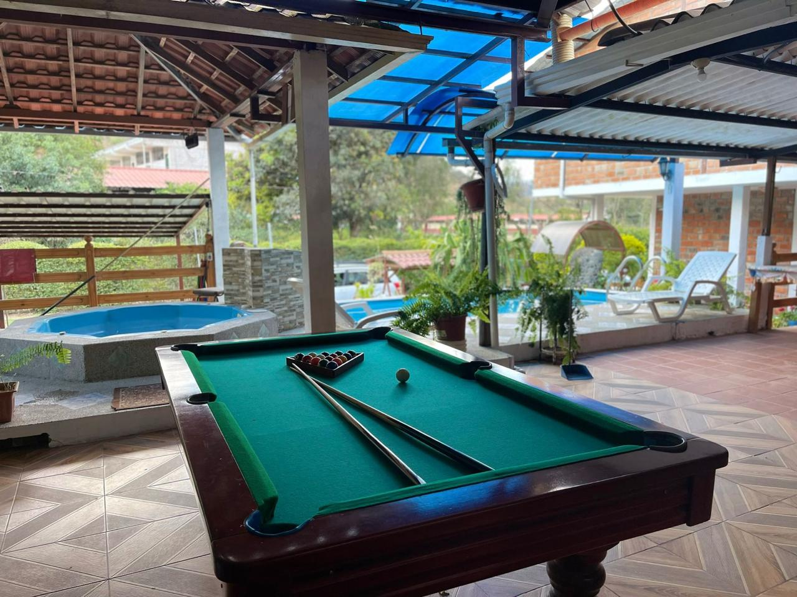
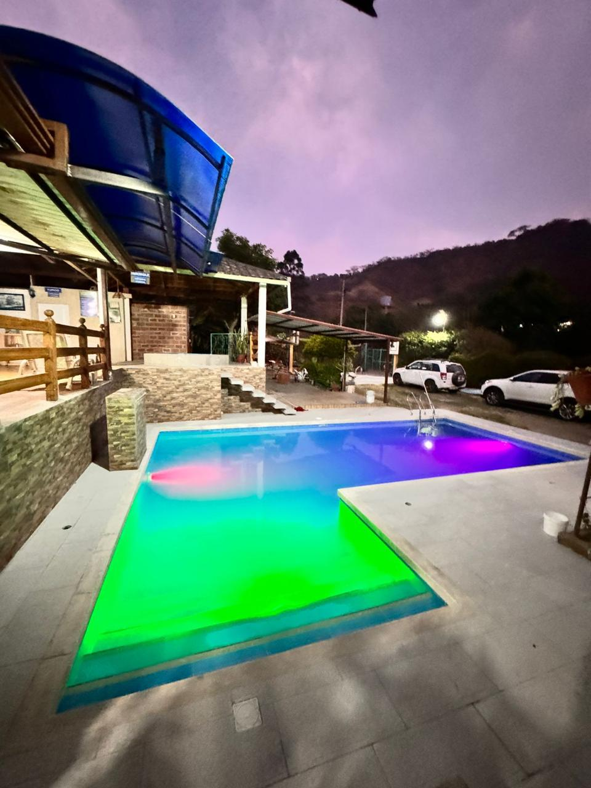
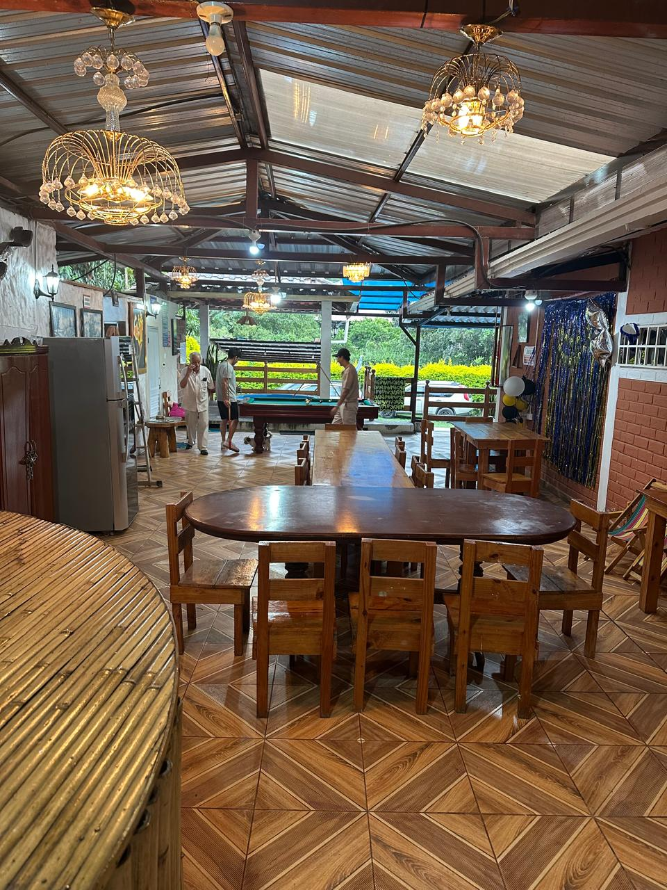
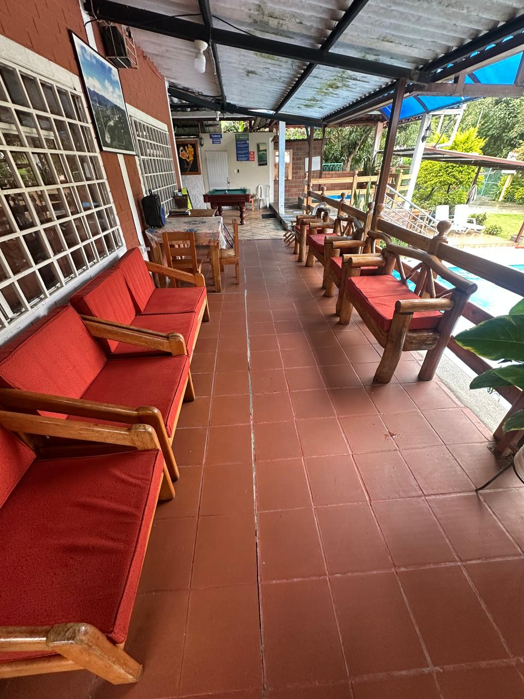
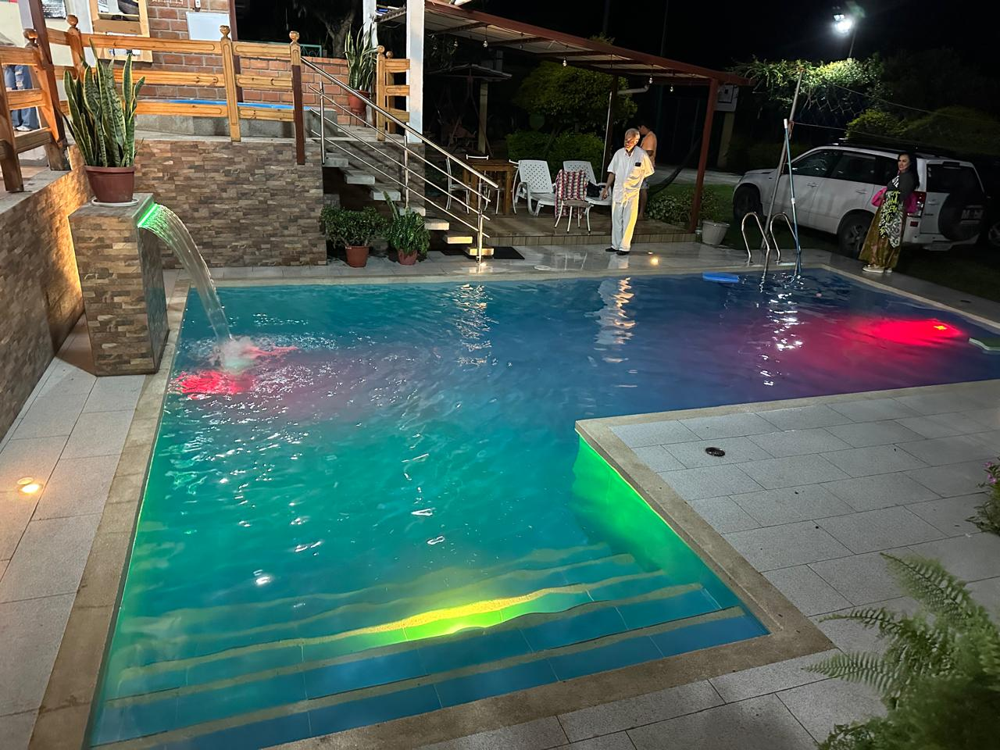
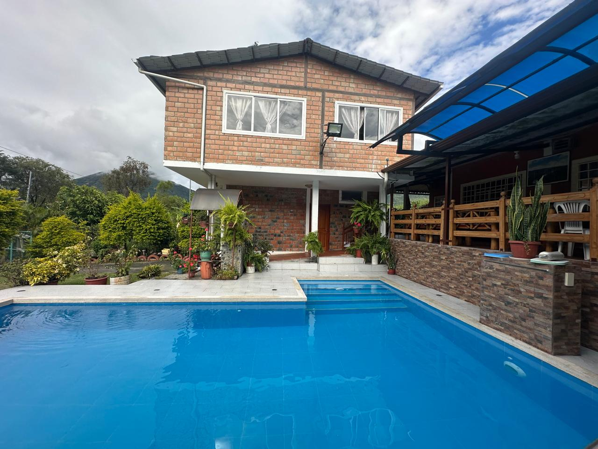
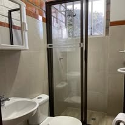
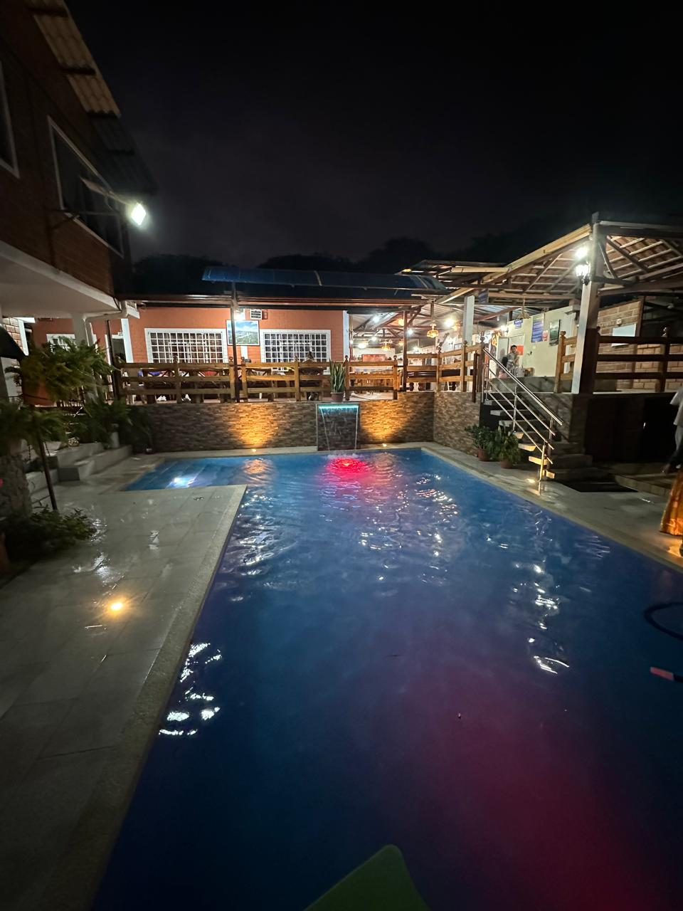
Resolvemos algunas dudas habituales antes de visitar La Trinidad.
En el barrio La Trinidad, detrás del Colegio Manuel José Rodríguez, aproximadamente a cinco minutos del centro de Malacatos, Loja, Ecuador. Puedes consultar la ruta en Google Maps desde esta página.
Sí. Las instalaciones incluyen piscina, jacuzzi y baño turco, además de espacios sociales y zona de parrilla.
Disponemos de mesa de ping-pong, mesa de billar, cancha de vóley, minicancha de básquet y juegos infantiles. También contamos con piscina, jacuzzi y baño turco.
Sí. Contacta por WhatsApp para consultar las alternativas disponibles y las condiciones de cada modalidad de hospedaje.
Las tarifas se consultan directamente, según las fechas, el número de personas y la opción de hospedaje solicitada. No se muestran precios fijos en la web.
Escríbenos por WhatsApp al 098 093 3451 e indica tus fechas de visita y el número de personas.
Consulta disponibilidad, condiciones y tarifas sin intermediarios.
La ubicación de Finca Agroturística La Trinidad permite disfrutar de un entorno tranquilo próximo al centro de Malacatos.